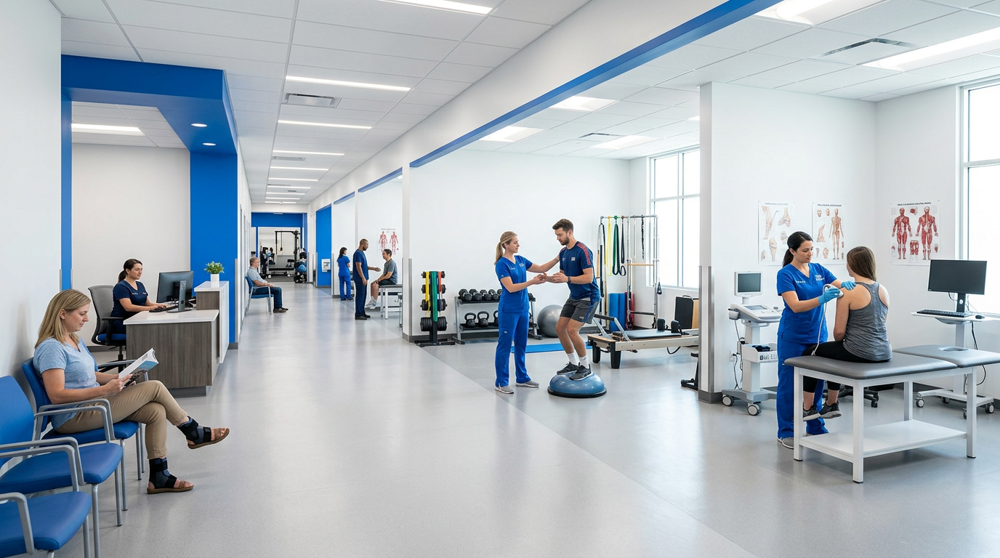
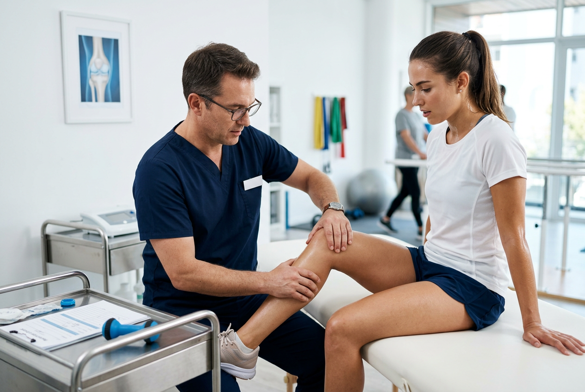
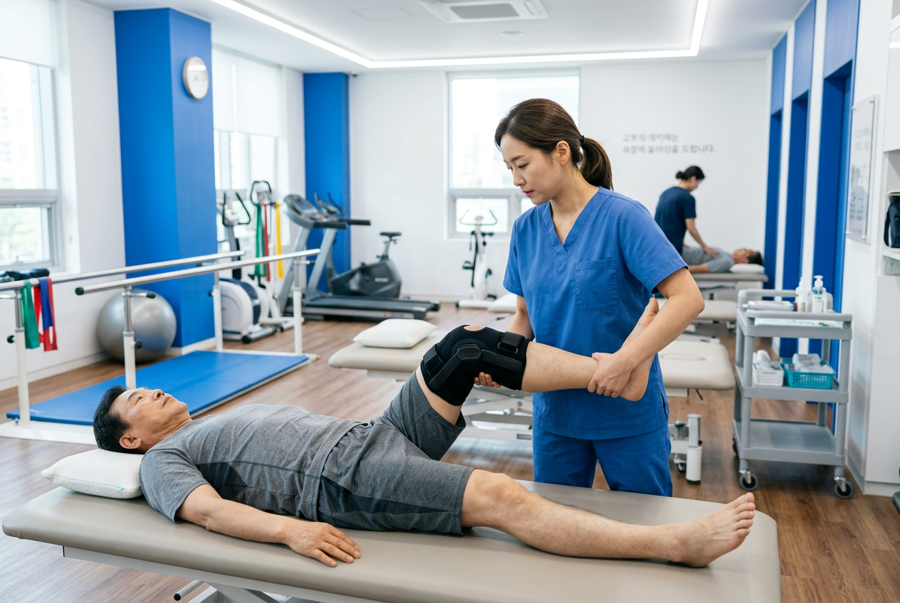
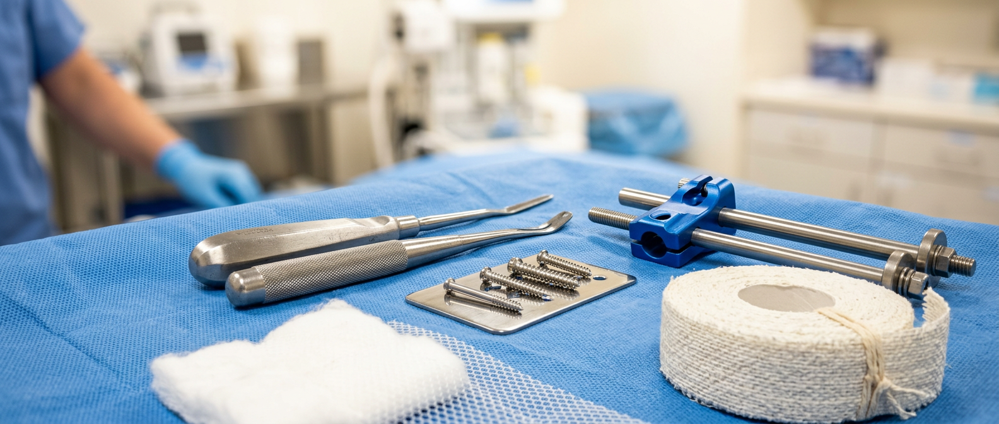
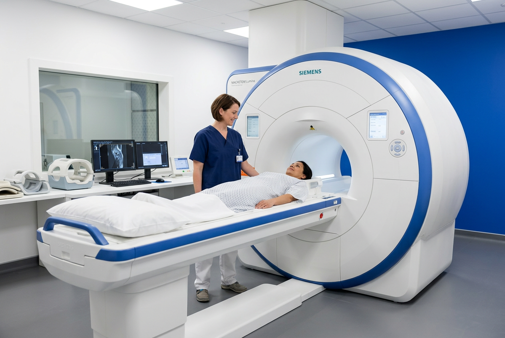
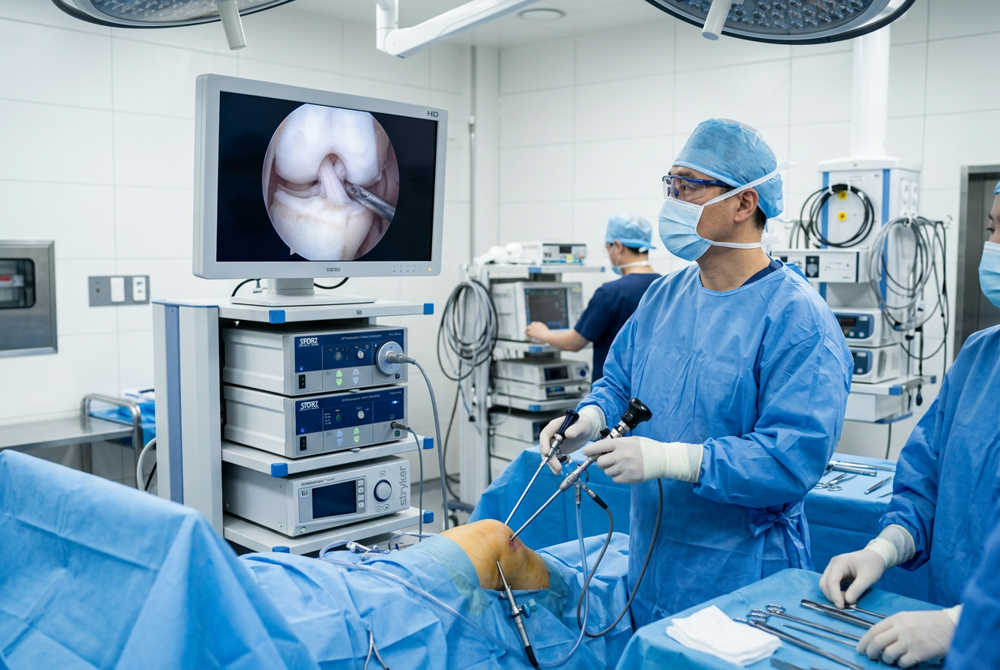
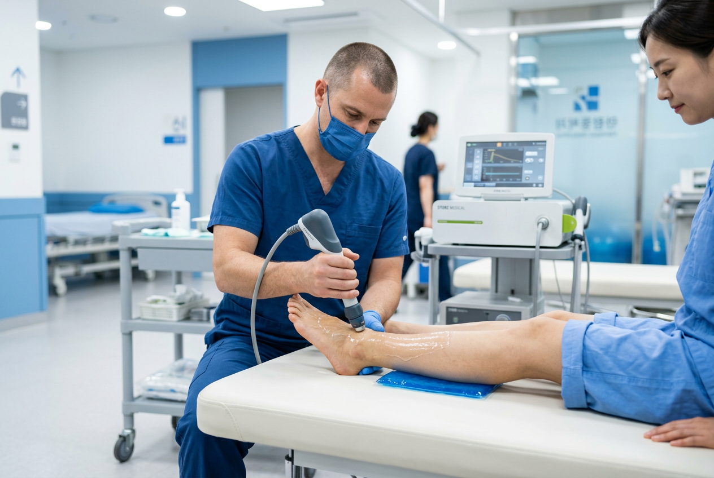
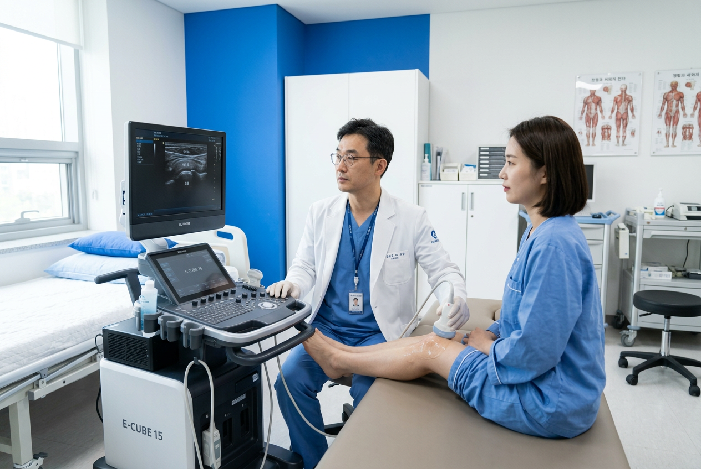
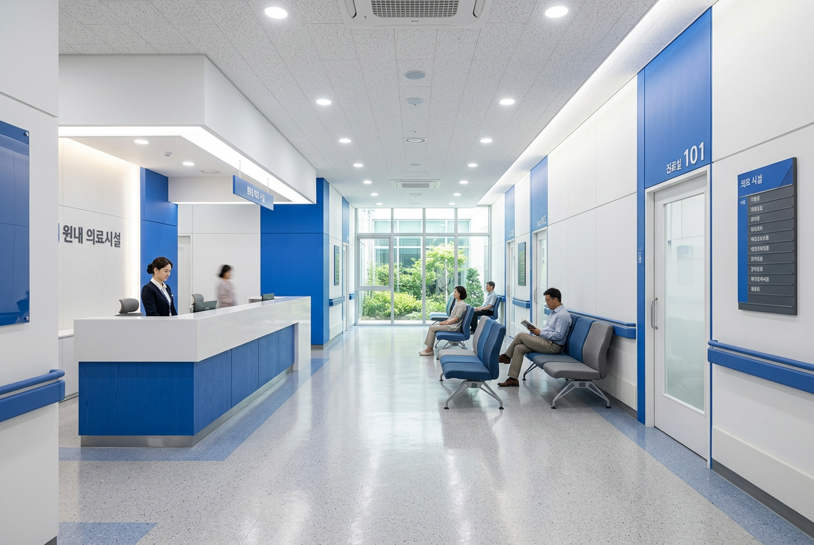
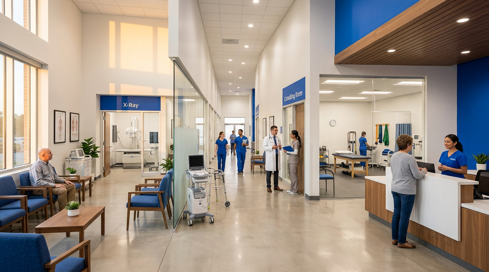

Treatment Areas

Sports Medicine
운동선수부터 주말 러너까지,
스포츠 손상의 정확한 진단과
맞춤 재활 프로그램을 제공합니다.
Joint Surgery
무릎·어깨·고관절 인공관절 수술 및
관절경 최소침습 수술 전문.
Spine Care
디스크·협착증·측만증 비수술 치료부터
척추 내시경 수술까지.

Rehabilitation
수술 후 재활·도수치료·충격파 치료를 통한
일상 복귀 맞춤 프로그램.
Medical Team
서울대·연세대 의과대학 출신,
대학병원 전임의 과정을 마친
정형외과 전문의가 진료합니다.
각 분야 최상위 수련 경력과
논문 실적을 보유하고 있습니다.
정형외과 전문의
서울대 의과대학 졸업
서울아산병원 전임의
대한스포츠의학회 정회원
관절·척추 전문의
연세대 의과대학 졸업
세브란스병원 관절센터
SCI 논문 12편 게재
재활의학과 전문의
고려대 의과대학 졸업
삼성서울병원 재활의학과
대한재활의학회 정회원

State-of-the-Art Equipment
3.0T MRI, 관절경 수술 시스템,
체외충격파(ESWT), 초음파 진단기까지.
대학병원급 장비를 원내에서 운용하여
당일 검사·진단이 가능합니다.




How It Works
온라인 예약부터 치료 후 관리까지,
체계적인 5단계 진료 프로세스로 운영됩니다.
홈페이지 또는 전화로
원하시는 일시에 예약
전문의 1:1 문진을 통한
증상 파악 및 병력 확인
MRI·X-ray·초음파 등
원내 당일 영상 검사
검사 결과 기반 최적의
수술/비수술 치료 설계
정기 추적 검진 및
재활 프로그램 연계
Patient FAQ
진료 전 궁금한 사항을
미리 확인하세요.

네, 본원은 건강보험 요양기관으로 지정되어 있습니다. 일반 진료, X-ray, MRI(의사 소견에 따라) 등 대부분의 진료가 보험 적용됩니다. 비급여 항목(체외충격파, 일부 주사치료 등)은 사전에 안내드립니다.
수술 종류에 따라 다릅니다. 관절경 수술은 약 2-4주, 인공관절 수술은 6-8주가 일반적입니다. 척추 내시경 수술의 경우 1-2주 내 일상 복귀가 가능합니다. 담당 전문의가 개인 상태에 맞는 회복 일정을 상세히 안내합니다.
건물 지하 1-3층에 전용 주차장이 마련되어 있으며, 진료 시 2시간 무료 주차가 가능합니다. 수술 환자분은 당일 종일 무료 주차를 제공합니다. 발렛파킹 서비스도 이용하실 수 있습니다.
진료 시간 내 응급 외상 및 골절 환자를 우선 접수하고 있습니다. 야간·공휴일 응급 상황 시에는 대표 전화(02-555-7788)로 연락 주시면 당직 의료진 안내를 받으실 수 있습니다.
본원의 모든 진료 및 수술에 대해 실비보험 청구가 가능합니다. 진료 후 제증명 발급 창구에서 진단서, 진료비 세부내역서 등을 바로 발급받으실 수 있으며, 필요 시 보험사 직접 청구 대행도 도와드립니다.
Patient Guide
월–금 09:00 – 18:00
토요일 09:00 – 13:00
점심시간 13:00 – 14:00
일요일·공휴일 휴진
스포츠의학
관절 센터 (무릎·어깨·고관절)
척추 센터
재활의학과
통증의학과
신분증(건강보험증) 지참
타 병원 진료기록 지참 시 참고
예약 시간 10분 전 내원
초진 소요시간 약 40-60분
Location
주소
서울특별시 강남구 테헤란로 152
프라임타워 8-9층
전화
02-555-7788
교통편
지하철 2호선 역삼역 3번 출구
도보 3분
주차
건물 지하 1-3층 전용 주차장
진료 시 2시간 무료

Book Your Consultation
온라인 예약으로 대기 시간 없이
전문의와 1:1 상담을 받아보세요.